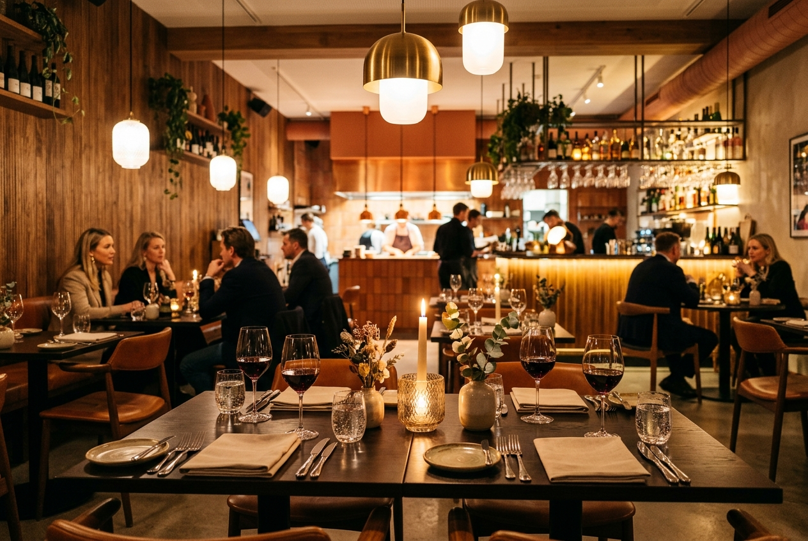

Sociala medier & innehållsskapande
Digital kompetens inom Instagram och TikTok. Stort intresse och vana av att följa nya trender, redigera samt skapa engagerande foto- och videomaterial.
Sociala Medier & Innehåll
Digital Marketing Specialist i Göteborg
Med ett stort intresse för sociala medier och digital marknadsföring ser jag fram emot att utveckla mina kunskaper och ta steget in i branschen för små och medelstora företag.

NYFIKEN, DRIVEN & REDO FÖR NYA UTMANINGAR
Jag är en glad och social tjej som gillar att ta mig an nya utmaningar. Just nu utbildar jag mig till Digital Marketing Specialist på IHM Business School i Göteborg.
Intresset för sociala medier och digital marknadsföring är något som jag haft länge. Innan utbildningen har jag jobbat mycket med service, försäljning och kundkontakt. Det har gett mig stor vana av att möta olika typer av kunder, leverera service på hög nivå och hantera stressiga situationer med god samarbetsförmåga.
Augusti 2026 – Pågående. Kurser inom bland annat marknadsföring, AI och tech samt karriärplanering inför LIA-praktik.
Augusti 2019 – Juni 2022. Gymnasieutbildning med inriktning mot handel, administration och kundrelationer.
Personliga styrkor: Strukturerad, noggrann, lagspelare och samarbetsvillig.
Övrigt: Svenska (modersmål), engelska (flytande) och manuellt B-körkort.
Digital kompetens inom Instagram och TikTok. Stort intresse och vana av att följa nya trender, redigera samt skapa engagerande foto- och videomaterial.
Erfarenhet från Kicks och Hajen av att planera och genomföra butikskampanjer, arbeta i kassa och med varuhantering samt hantera olika kundsituationer.

Mångårig erfarenhet som servitris och hovmästare på Taverna, &Olles, Scandinavian Brasserie och Brödernas. Van vid gästmottagning, högt tempo och service på svenska och engelska.
Vill du veta mer, diskutera potentiella samarbeten eller framtida LIA-praktik? Hör gärna av dig via formuläret, telefon, mejl eller LinkedIn.
Referens lämnas gärna på begäran.